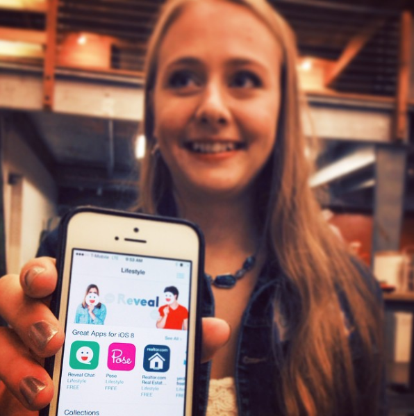

nadine aurora tabing
UX Designer & Writer based in the Pacific Northwest
Reveal Chat was a startup dedicated to “curing loneliness.”
I was one of the first employees, and implemented user-facing features for desktop/mobile web using Ruby on Rails, HAML, HTML, CSS/SCSS, and jQuery.
I also performed usability/customer development tests, sketched user flows, and iterated on features to improve UX and product growth on web/iOS. I ran various lightweight, “cheap” experiments to improve growth and validated features with user data.

Reveal Chat website

Reveal Chat mobile UI
The product was officially launched September 2014.
A photo from Reveal Chat's launch party, showing Reveal Chat being featured in the App Store
In November, we were featured in Takei's Take!
In under nine months, Reveal Chat scaled from 10,000 users to over two million users. In 2015, Reveal Chat was acquired by Rhapsody International (now Napster).